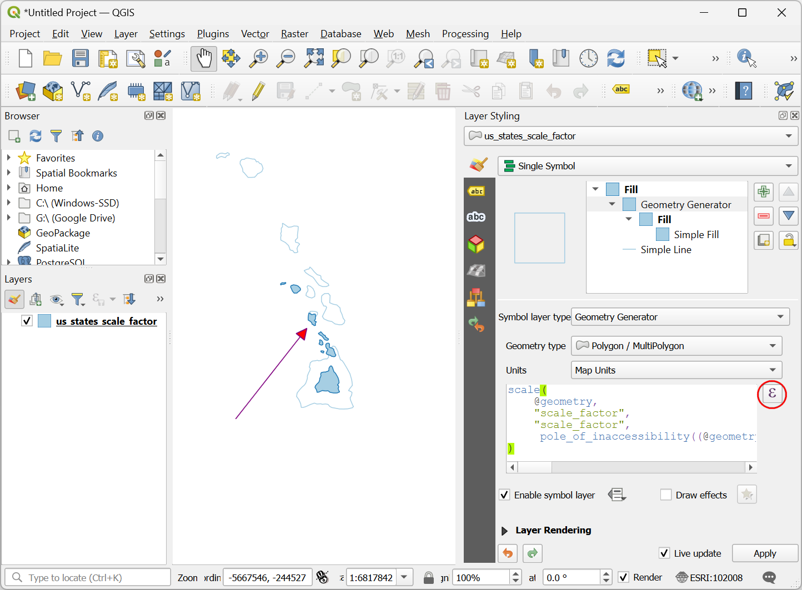
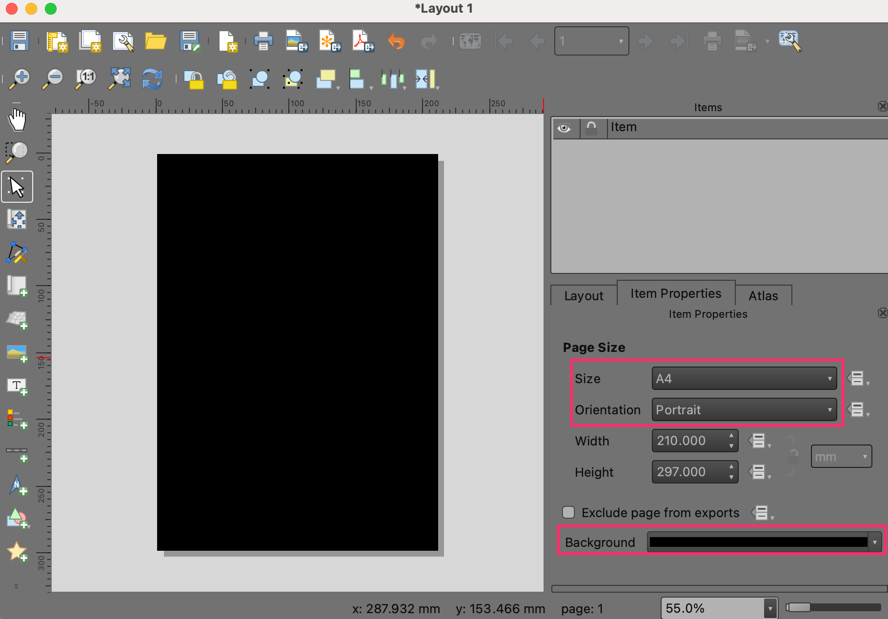
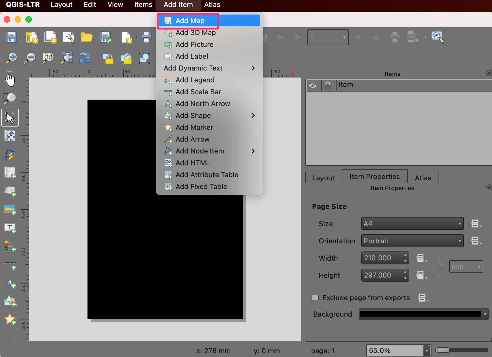
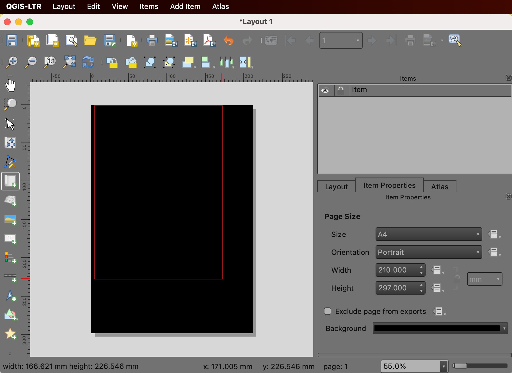
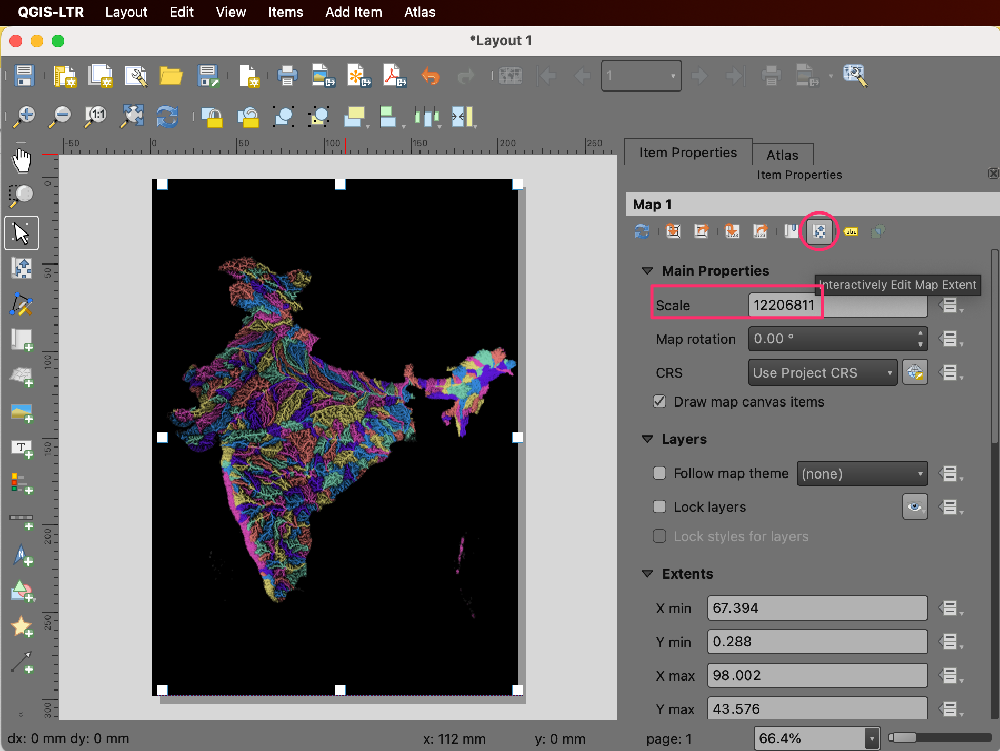
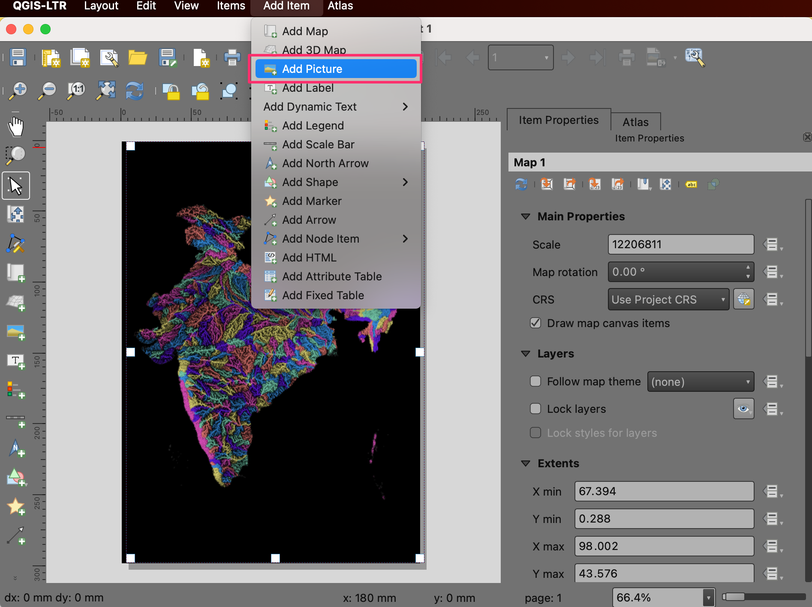

Een gekleurde rivierbekken-kaart maken (QGIS3)¶
In deze handleiding zullen we de werkstroom voor QGIS leren om artistieke kaarten voor rivieren te maken voor uw eigen land of regio met openbaar beschikbare hydrologische gegevens.
Notitie
Deze handleiding is geïnspireerd op de prachtige kaarten die worden geproduceerd door Grasshopper Geography. Ik ben eigenaar van een van hun afdrukken en ook u kunt hun werk ondersteunen door een van kaarten te kopen vanaf hun online winkel.
Overzicht van de taak¶
In deze handleiding zullen we gegevenslagen voor bekkens en rivieren van HydroSHEDS gebruiken en een kaart van de beddingen van rivieren in India maken.

Andere vaardigheden die u zult leren¶
Hoe een projectie toe te wijzen aan een vectorlaag met onjuiste of ontbrekende projectie.
Hoe meerdere lagen samen te voegen tot één Geopackage.
Hoe een badge ‘Made with QGIS’ aan uw kaart toe te voegen.
De gegevens ophalen¶
HydroSHEDS provides global hydrological datasets suitable for regional and global applications. The data layers are derived from hydrologically conditioned DEM from SRTM.
Grenzen van bekkens¶
HydroBasins verschaft polygoongrenzen van bekkens voor verschillende continenten. De grenzen zijn hiërarchisch – elk bekken op niveau N wordt verder onderverdeeld in kleinere bekkens op het niveau N+1. Voor deze handleiding zullen we de niveau 6 grenzen voor bekkens gebruiken. U kunt een ander niveau gebruiken, afhankelijk van uw regio en het type kaart dat u wilt maken. Bezoek de pagina HydroBASINS en download het zip-bestand voor uw regio.

Notitie
HydroSHEDS basin boundaries are derived from SRTM data which is over 20 years old at this point. The basin boundaries may not match the official basin boundaries in your region. You can substitute HydroBasins data with polygons from official sources when available.
Riviernetwerk¶
HydroRIVERS verschaft een lijn-shapefile dat het netwerk van de rivier weergeeft. Bezoek de pagina HydroRIVERS en download het zip-bestand voor uw regio van interesse.

Administratieve grens¶
We zullen de gegevens van HydroSHEDS clippen naar de grens van de door u gekozen regio. In deze handleiding willen we een kaart met bekkens in India maken, we zullen dus de Shapefile met grenzen van Survey of India gebruiken. Bezoek de pagina Outline Maps of India en download de India International Boundary Vector Format. Als u administratieve grenzen van andere landen of staten wilt, kunt u die ophalen vanaf GADM of geoBoundaries.

Als alle bestanden zijn gedownload, pak ze uit en kopieer ze naar een map. U zou nu 3 Shapefiles moeten hebben: hybas_as_lev06_v1c.shp, HydroRIVERS_v10_as.shp en administratieve grenzen `polymap15m_area.shp`.

Gegevensbronnen: [HYDROSHEDS], [SOI]
Procedure¶
Open QGIS en lokaliseer de gedownloade bestanden in de QGIS Browser. Sleep
hybas_as_lev06_v1c.shpenHydroRIVERS_v10_as.shpnaar het kaartvenster en zet ze daar neer.

Lokliseer de shapefile met de administratieve grenzen
polymap15m_area.shpen sleep-en-zet-neer in het kaartvenster.

De gegevenslagen van HydroSHEDS hebben enkele objecten met ongeldige geometrieën. Laten we die repareren bij het doorgaan. Open de Toolbox van Processing via . Zoek en lokaliseer het gereedschap . Dubbelklik erop om het te starten.

Notitie
U kunt de handleiding Ongeldige geometrieën afhandelen (QGIS3) bekijken om meer te weten te komen over de oorzaken en reparaties voor ongeldige geometrieën.
Selecteer
hybas_as_lev06_v1cals de Invoerlaag. Klik op de knop … naast Gerepareerde geometrieën en selecteer Opslaan naar GeoPackage….

Browse to the location where you want to save the output data and enter the name
data.gpkg. Click Save. You will be prompted to enter a Layer name. Enterbasins_fixed. Click OK. Next click Run to run the algorithm and generate the output layer.

Repeat the step for the
HydroRIVERS_v10_aslayer. Select the same GeoPackagedata.gpkgthat was created in the previous step. Do not worry if you get a message indicating that the file will be overwritten. QGIS will not overwrite the file, but append a new layer to the same GeoPackage. This time userivers_fixedas the Layer name.

De laag
polymap15m_areaheeft een projectie die niet wordt herkend door QGIS. We zullen een bekende projectie aan deze laag toewijzen. Zoek en lokaliseer het gereedschap en dubbelklik erop om het te openen.

Notitie
Onthoud dat het gereedschap Projectie toekennen de laag niet opnieuw projecteert, maar eenvoudigweg de juiste informatie over de projectie toevoegt aan een laag met geoverwijzingen met ontbrekende of onjuiste projectie. Gebruik het gereedschap Laag opnieuw projecteren als u het CRS van een laag wilt wijzigen.
Selecteer
polymap15m_areaals de Invoerlaag. Klik op de knop CRS selecteren en zoek naar de projectieEPSG:7755 - WGS 84 / India NSF LCCen selecteer die. Klik op de knop … naast Assigned CRS en selecteer Opslaan naar GeoPackage….

Select the same GeoPackage
data.gpkgand enter the layer nameadmin_boundary_fixed. Click Run.

U zult nu 3 nieuwe lagen hebben
basins_fixed,rivers_fixedenadmin_boundary_fixedgeladen in het paneel Lagen in QGIS. Houd de Shift-toets ingedrukt en selecteer alle resterende lagen. Klik met rechts en selecteer Laag verwijderen….

We zullen nu de lagen voor de bekkens en de rivieren clippen naar de administratieve grens. Zoek en lokaliseer het gereedschap uit de Toolbox van Processing. Dubbelklik erop om het te openen.

Select
basins_fixedas the Input layer andadmin_boundary_fixedas the Overlay layer. Save the output to the same GeoPackagedata.gpkgas the layerbasins_clipped. Click Run.

Als het verwerken is voltooid, herhaal het proces met de laag
rivers_fixedals de Invoerlaag enadmin_boundary_fixedals de Overlay laag. Sla de uitvoer op naar hetzelfde GeoPackagedata.gpkgals de laagrivers_clipped. Klik op Uitvoeren.

You will now have 2 new layers
basins_clippedandrivers_clipped, as well asadmin_boundary_fixedlayer loaded to the Layers panel in QGIS. Hold the Shift key and select all remaining layers. Right-click and choose Remove Layer….

Laten we, voordat we verder gaan, het project opslaan. QGIS staat u altijd toe een project op te slaan binnen een GeoPackage - wat het heel handig maakt voor het beheren van aanvullende bestanden. Ga naar .

In the Save project to GeoPackage dialog, click the … button next to Connection and browse to the existing
data.gpkgfile. Enter the namerivers_basin_mapas the Project name. Click OK.

Once saved, you can expand the
data.gpkgin the Browser panel and see that the QGIS project is now saved inside the GeoPackage. Users of this GeoPackage can now open the project directly from the GeoPackage.

We moeten, om onze gekleurde kaart te kunnen maken, alle beddingen een kleur geven, maar zo dat aansluitende bekkens niet dezelfde kleur hebben. QGIS heeft precies daar een gereedschap voor. Open het gereedschap in de Toolbox van Processing.

Select
basins_clippedas the Input layer. Leave other options to their default values. Save the output to the same GeoPackagedata.gpkgas the layerbasins_with_color. Click Run.

Als de verwerking eenmaal is voltooid zal een nieuwe laag
basins_with_colorworden geladen in het paneel Lagen. Klik met rechts op de laag en selecteer Attributentabel openen. Het zal u opvallen dat de nieuwe laag een nieuw attribuut heeft, genaamdcolor_idmet een waarde integer. Toewijzen van een unieke kleur aan elke waarde integer zal resulteren in topologisch kleuren van de laag.

We willen de color id voor de bekkens overbrengen naar alle rivieren die daarin zijn opgenomen. Open het gereedschap in de Toolbox van Processing.

Hier willen we selecteren
rivers_clippedals de laag Samenvoegen met objecten in enbasins_with_colorals de laag voor In vergelijking met. In het gedeelte Velden die moeten worden toegevoegd, klik op de knop … en selecteer het veldcolor_id. Sla de uitvoer op naar het GeoPackagedata.gpkgals de laagrivers_with_color. Klik op Uitvoeren.

Als de verwerking eenmaal is voltooid zal een nieuwe laag
rivers_with_colorworden geladen in het paneel Lagen. Nu is het tijd om de symbologie toe te passen. Selecteer de laagadmin_boundary_fixeden klik op de knop Paneel Laag opmaken openen in het paneel Lagen. Wijzig de kleur naar zwart.

Selecteer vervolgens de laag
rivers_with_coloren selecteer de rendererCategorieën.

Selecteer
color_idals de Waarde en klik op Classificeren. U zult zien dat de rivieren in de verschillende bekkens een verschillende kleur krijgen toegewezen.

Notitie
Als u niet tevreden bent met de willekeurig gekozen kleuren, kunt u klikken op het Symbool voor individuele waarden in de lijst eronder en uw eigen kleuren kiezen.
De standaard lijnen zijn te dik voor onze kaart. Laten we die wijzigen. Houd de Shift-toets ingedrukt en selecteer alle symbolen in de lijst. Klik op het Symbool om de Symboolinstellingen te openen.

Klik op Doorgetrokken lijn en wijzig de lijndikte naar
0.1. De kaart zal er nu al veel beter uitzien.

We can improve the map by assigning different widths to the rivers based on their size. The
rivers_with_colorlayer has a fieldORD_STRAcontaining the value of the Strahler Order of the river. The larger the number, the bigger the river. We will use the Assistant to help us use the value of the strahler order to an appropriate stroke width. Click the Data defined override button next to Stroke width and select Assistant….

Selecteer, in het gedeelte Invoer, het veld
ORD_STRAals de Bron met Waarden uit als1en tot en met als6. In het gedeelte Uitvoer, kies Grootte uit als0.05en tot en met als0.2. De kaart zal dynamisch worden bijgewerkt als u de waarden invoert. U zou die waarden misschien moeten aanpassen, afhankelijk van uw regio. Wanneer u tevreden bent met uw kaart, klik dan op de knop Ga terug.

Het zal u opvallen dat de knop Data-bepaalde ‘override’ voor Lijndikte nu geel is, wat aangeeft dat er een actieve override is toegepast op deze instelling.

Onze gekleurde kaart voor rivierbekkens is nu klaar. Laten we deze kaart in een afdruklay-out plaatsen zodat we een kaart met hoge resolutie en met andere kaartelementen kunnen exporteren. Ga naar . Als u gevraagd wordt naar een naam, laat die dan blanco en klik op OK.

In het venster Lay-out 1, klik met rechts op het blanco kaartvenster en kies Pagina-eigenschappen….

Kies
A4als de Grootte. Wijzig de kleur van de Achtergrond naar zwart.

Ga naar .

Houd de linkermuisknop ingedruk en selecteer een regio in het kaartvenster waar u de kaart wilt plaatsen.

Als de kaart eenmaal is verschenen, scroll naar beneden op de tab Item-eigenschappen en schakel de Achtergrond uit.

Notitie
Wanneer u de tab Item-eigenschappen niet ziet of die per ongeluk hebt gesloten, kunt u die terugkrijgen door te gaan naar in het menu van Lay-out.
Laten we het kaartbereik aanpassen. Klik op de knop Kaartbereik interactief bewerken en gebruik dan de muis om de kaart te verschuiven. U kunt ook uw scrollwiel gebruiken om het zoomen aan te passen. Als u meer fijnere controle wilt over het zoomen, pas dan de waarde voor Schaal handmatig aan. Herhaal dat totdat u tevreden bent met de plaatsing van de kaart.

Vervolgens zullen we een logo van QGIS toevoegen aan de kaart. Ga naar .

Teken een rechthoek waar u het logo wilt plaatsen. In het dialoogvenster Item-eigenschappen, lokaliseer de groep met pictogrammen logos. Selecteer het logo
Made with QGIS.

Vervolgens zullen we een label toevoegen met naamsvermelding voor de gegevens. Ga naar . Voer de tekst voor de naamsvermelding voor de gegevens in en pas het lettertype en uitlijning van het label aan.

Once you are ready to export the results, go to . Browse to a folder on your computer where you want to save the PNG image and enter the name
river_basins.png.

Kies
300 dpials de Export resolutie en klik op Opslaan.

Als het exporteren is voltooid, zal uw uiteindelijke kaart op de gekozen locatie staan.

Hier is de uiteindelijke PNG-afbeelding die we hebben gemaakt met QGIS en open gegevenssets.

If you want to give feedback or share your experience with this tutorial, please comment below. (requires GitHub account)